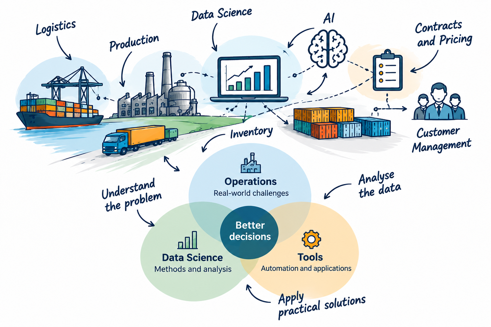

ABOUT
Bridging supply chain operations and data science.
I combine eight years of experience in the chemical industry with practical data and automation skills. My focus is turning recurring supply chain problems into clear, usable solutions.
I worked for three years as a Customer Coordinator and five years as a Customer Data Analyst. I understand the operational work behind the data — and build tools that help make that work more transparent and efficient.

MY TOOLBOX
Practical methods for real problems.
I have learned and applied the following languages, tools and analytical methods in my portfolio projects.
Languages & Tools
- Python: Pandas, Matplotlib, PyTorch, scikit-learn and XGBoost
- SQL and SPSS
- HTML and CSS
- JavaScript
- Power Automate
Analytical Methods
- Regression
- Cluster analysis
- Decision trees
- Neural networks